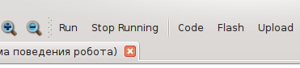
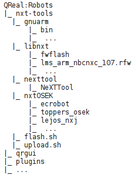

Запуск программ в QReal:Robots
В QReal:Robots существует несколько вариантов выполнения программ:
пошаговая интерпретация диаграмммы с посылкой команд в робота по Bluetooth или моделированием поведения робота с помощью двухмерной модели,
прошивка и дальнейшее автономное исполнение программы на роботе без связи с компьютером.
Чтобы запустить программу на выполнение, необходимо нажать кнопку "Выполнить" панели "Интерпретатор" или меню "Инструменты":

После этого интерпретатор ищет блок "Начало", с которого и начинается выполнение программы. Если такой блок на диаграмме не найден, будет выдано сообщение об ошибке. Для каждого функционального блока (см. раздел
Блоки в QReal:Robots) должна существовать ровно одна исходящая связь, по которой выполнение программы перейдет к следующему блоку. В противном случае будет выдано сообщение об ошибке.
Для того, чтобы остановить выполнение программы, нужно нажать кнопку "Прервать выполнение" панели "Интерпретатор" или меню "Инструменты".
Для прошивки программ в робота в QReal:Robots необходим дополнительный пакет инструментов, который можно скачать
с сайта проекта. Для установки нужно распаковать архив в корень директории, в которую установлен QReal. При этом иерархия каталогов должна получиться следующая (сюда бы картинку со скриншотом проводника):

Для того, чтобы запускать программы на роботе, вместо стандартной операционной системы Lego Mindstorms NXT 2.0 необходимо использовать прошивку nxtOSEK, которая является расширением стандартной системы, позволяющим сохранять программы с компьютера по USB и запускать их на роботе. Чтобы записать в робота прошивку nxtOSEK, необходимо подключить его по USB к компьютеру, перевести робота в режим перезагрузки (нажать и удерживать 4 секунды кнопку Reset на задней панели управляющего блока робота) и нажать в QReal:Robots кнопку "Прошивка" панели инструментов "Взаимодействие с роботом". Дождитесь информационного сообщения, подтверждающего завершение операции прошивки операционной системы. В случае неуспешного завершения убедитесь, что в каталоге, куда был установлен QReal:Robots, присутствует каталог nxt-tools, робот корректно подключен к компьютеру с помощью USB-провода и находится в режиме перезагрузки, после чего попробуйте перезаписать образ операционной системы еще раз.
Когда прошивка успешно перезаписана, робот готов к загрузке на него и выполнению программ. Для этого нужно убедиться, что робот корректно подключен по USB к компьютеру и находится во включенном состоянии. После этого нужно нажать кнопку "Загрузить" панели инструментов "Взаимодействие с роботом". В редакторе диаграмм откроется дополнительная вкладка, на которой будет показан код на Си-подобном языке, поддерживаемом операционной системой nxtOSEK. Этот код будет скомпилирован в исполняемую программу и загружен в робота. При неудачном завершении операции будет выдано информационное сообщение, описывающее проблему.